Chapter 08 쇼핑카드 앱 만들기
완성 화면


주요 위젯 구성
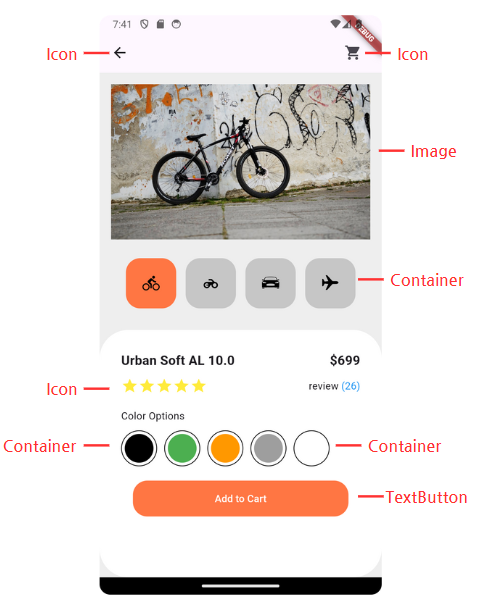

stateless 위젯으 사용한다면 화면은 그릴 수 있으나 버튼을 눌렀을 때 페이지가 변하지 않는다.
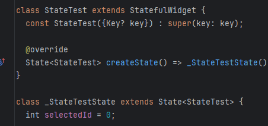
StatefulWidget의 createState 메서드는 State 객체를 생성하고 반환하면서 상태를 관리한다. 버튼의 기본 값을 0으로 지정한다.

화면에 표시될 숫자 리스트를 만든다.

버튼에 id 값을 지정한다. 선택된 버튼의 id 값에 따라 상태를 변경하도록 한다.
하지만 변수의 값을 직접적으로 변경하게 되면 앱이 다시 build 되지 않는다. 플러터에서 그림이 다시 그린다는 의미는 build() 함수가 다시 실행된다는 의미이다. 따라서 build() 함수를 호출하기 위해 변수 변경 시 특정 함수를 호출해야 한다.
1.3 setState 함수
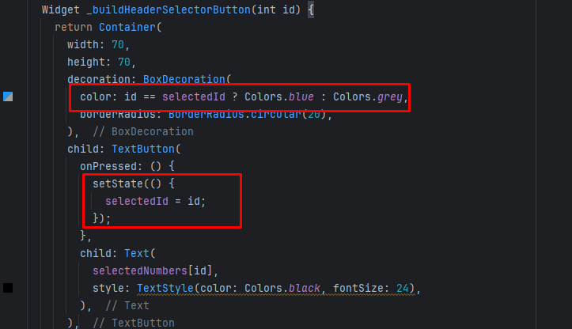
버튼을 누르면 setState가 호출되면서 id 값이 바뀌고, 버튼의 색도 변경된다.

그리고 상단에 표시될 숫자의 인덱스도 변경한다.

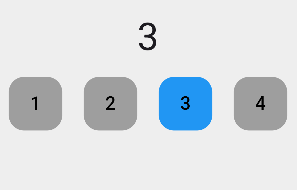

만약 이런 화면이 있다면 위젯트리는 다음과 같다.
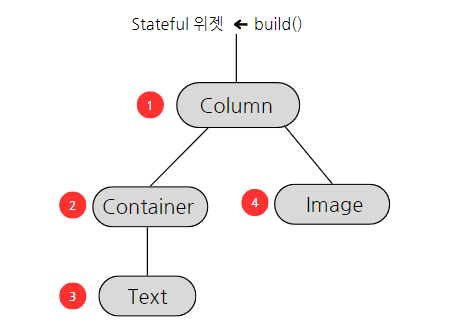
Stateful 위젯의 상태가 바뀌면 Text 의 낮 -> 밤으로 상태가 변경되기를 기대한다.
현재의 위젯 트리에서는 앱이 실행되면 StatefulWidget의 build() 함수가 호출 되면서 1, 2, 3, 4 순으로 화면이 그려진다.
단점은 Text 위젯을 다시 그리기 위해 모든 위젯이 다시 그려지는 일이 발생한다.
3. BuildContext 분리
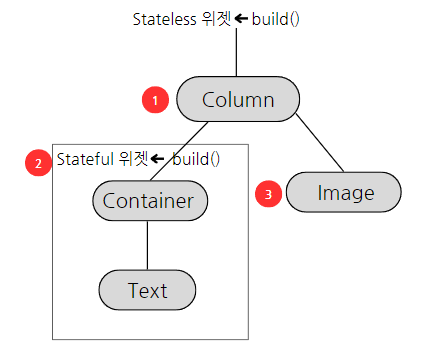
그림과 같이 부모 위젯은 stateless 로 변경한 후 Text 위젯 부분을 Stateful 로 설정한다. 이렇게 변경이 필요한 부분을 별도 컴포넌트로 분리하면 새로운 BuildContext가 생성되고, 원하는 Text 부분만 그림을 그릴 수 있다.
4. Stack 위젯

Stack 위젯을 사용해 여러 개의 자식 위젯을 겹칠 수 있다.
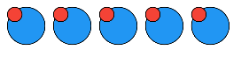
5. Positioned 위젯
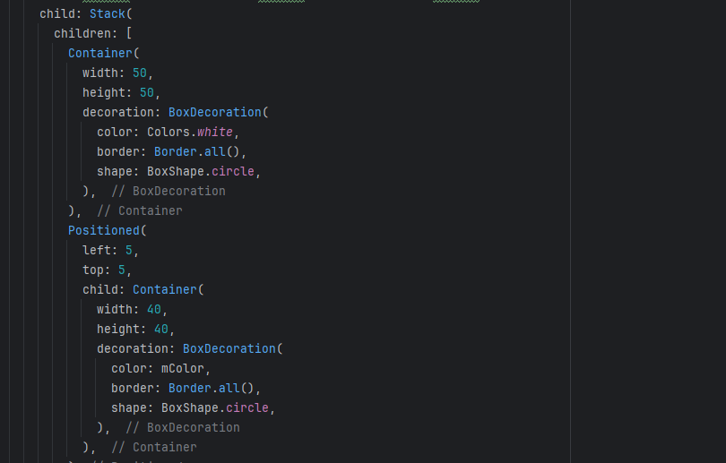
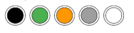
Positioned 위젯을 사용하면 Stack 의 자식 위젯들의 위치를 조정할 수 있다.
6. ClipOval 위젯

Container 의 decoration 속성을 사용하지 않아도 Container 위젯을 원형으로 만들 수 있다.
7. CupertinoAlertDialog
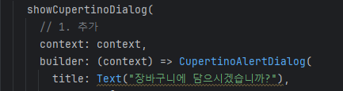
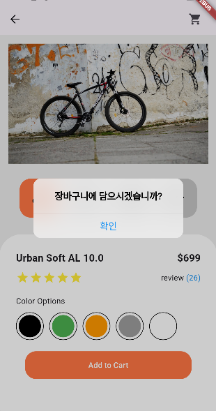
CupertinoAlertDialog 위젯이 팝업되면 ShoppingCartPage 위젯 위에 팝업이 된다.

따라서 팝업을 사라지게 하려면 Navigator.pop() 함수를 이용해 제거해야 한다.
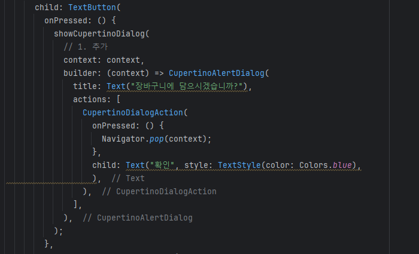